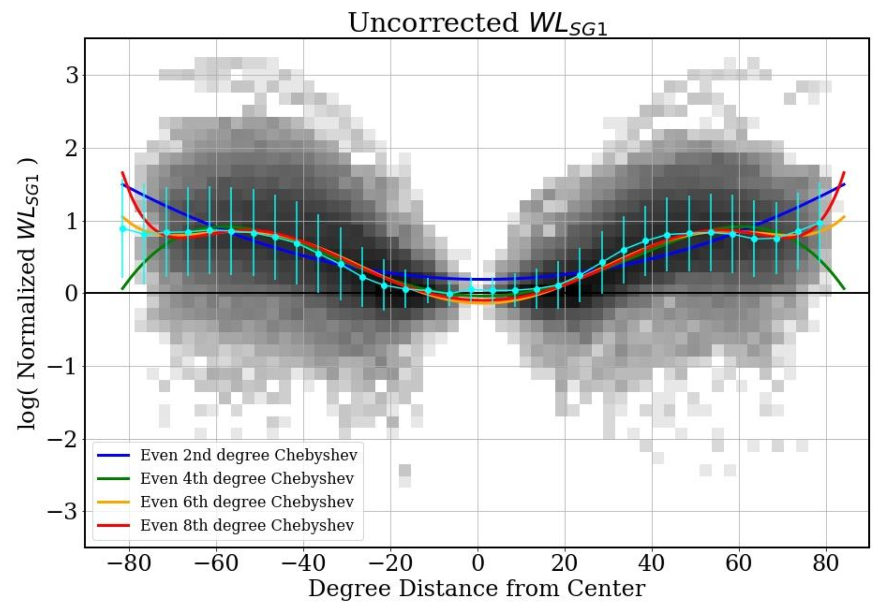
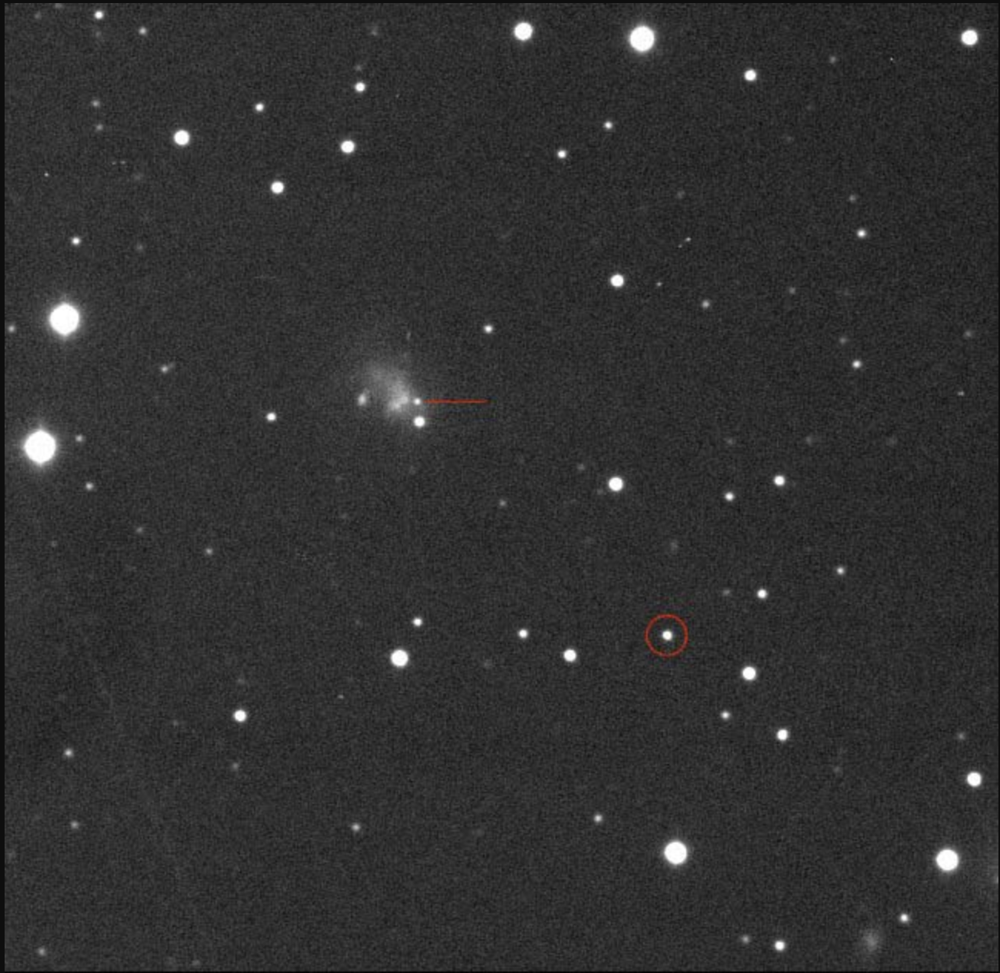

Fine-Scale Bright Dots and their Association with Coronal Plumes
Lockheed Martin Solar and Astrophysics Laboratory; Bay Area Environmental Research Institute

This work presents coordinated Solar Orbiter/EUI and IRIS observations of a high density of fine-scale bright dots
at the base of a plume in sunspot penumbra during the plume formation. To our knowledge, this is the first detailed
analysis of plume formation in a sunspot penumbra. We find significantly more bright dots in EUI 174 Å at the plume
base than in other similar regions around the sunspot, and we characterize these dots by their size, lifetime,
intensity and velocity in EUI 174 Å, and IRIS 1400 Å and 2796 Å. Time-distance maps along the plume show some
parabolic patterns. We find a small systematic spatial offset of dot locations along the plume in IRIS 2796 Å,
1400 Å, and EUI 174 Å, respectively. We discuss the possible ways these brightenings are formed
— chromospheric shocks and magnetic reconnection — as well as how these brightenings may contribute to plume heating.
Improving MagPy
University of Alabama in Huntsville; NASA Marshall Space Flight Center

I worked with Dr. David Falconer to correct the radial distance dependence of magnetic measures in JSOC deprojected cylindrical magnetograms. My work is in the process of being incorporated into MagPy, an improved and Python-based version of MAG4, to improve forecasts far from disk center. From my poster and talk, I won first place in the REU program's poster competition. I presented this poster at the AGU 2021 Fall Meeting in New Orleans, LA and at COSPAR 2022 in Athens, Greece.
Determining the Hubble Constant with Twin Supernovae
Lawrence Berkeley National Laboratory

Type Ia supernovae have long been useful for cosmology, particularly determining the Hubble constant (H0), the expansion rate of the universe. Various methods have been used to calculate H0, and these techniques are becoming increasingly precise without converging — a contradiction known as the “Hubble Tension.” We aim to use the Twins Embedding method of Type Ia supernovae standardization to calculate a value of H0. I developed methods to preprocess Type Ia supernovae spectra so they can be run through the Twins Embedding neural network.
Review of Celestial Coordinates for Historical Type Ia Supernovae
Lawrence Berkeley National Laboratory; UC Berkeley

The positions of supernovae within their host galaxies have long proven useful for understanding their physical properties.
In particular, the correlation of cosmological residuals of Type Ia supernovae with host galaxy properties has sparked a
renewed interest in examining the host galaxy environments surrounding cosmological Type Ia supernovae. We use
archival imaging to place the coordinates of a sample of 735 Type Ia supernova onto the precise astrometric frame defined
by GAIA. We find improved coordinates for 35 SNe giving projected distance changes up to 9.2 ± 1.0 kpc.